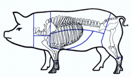

SAFARI
Users
- General & History
- Cuts of Fresh Pork - including Parts & Innards
- Pork Products -
Bacon, Pickled and Smoked Pig Parts, etc
- Hams - Wet & Dry Cured - with links to cooking method.
- Health Considerations
- Links
General and History
Pigs were one of the first animals to be domesticated, probably because they found hanging around with people provided a good food supply. Scientists now believe pigs were domesticated about 7000 years ago and independently in China and the Near East.
Near Eastern domesticated pigs were taken to Europe and from them the Europeans learned to domesticate their own wild boars. European pigs were in turn exported to the Near East and the Near Eastern genotype is now extinct in Europe.
Domestic pigs can get very large, even over 1000 pounds (domestic pig named Fred, released on a hunting preserve and shot in April 2007), but they are generally sent to market at less than a year old and about 230 pounds.
Wild Boar
is also in considerable demand so there are boar farms all over Europe to fill the demand. Some of their ancestral territory, recently reclaimed, has been settled by escapees from boar farms.Domestic pigs can also go feral, becoming a real nuisance, destroying crops and causing substantial damage to delicate habitats. They are very difficult to control because they are very smart, hard to catch or hunt, and because of the inevitable outcry by unthinking single-issue animal advocates.
Who Eats Pigs & Who Doesn't
Pigs are outstandingly tasty. So tasty, in fact, that God has reserved them for the Pagans (Pagans senso lato includes Christians) and forbids Jews and Muslims from eating them. They are not valuable as beasts of burden or for production of milk or wool, so you might as well eat them. Pork is the most eaten meat in much of the world, but not all the world. In some regions there are religious prohibitions, and in others, particularly India, they are economically nonviable because they compete directly with humans for scarce food resources. In such regions goats, which can survive on scrub and weeds, are the main meat. Here's a breakdown:
Jews
are forbidden by God from eating pig but have no prohibitions on using non-food pig products such as leather. The Hebrew texts call pigs "unclean" but provide no further explanation. A number of reasons have been proposed which I explore on the page Pig Prohibitions.Islam
inherited the Jewish prohibition and expanded on it to forbid any contact whatever with pigs or pig products on pain of frying forever in the sauté pans of Hell - no virgins for you, buddy!Buddhists
of non-vegetarian sects have no problem with pig. Members of some vegetarian sects which depend on charity can eat pig if it has been offered incidentally and was not prepared specifically for them. It is said the Buddha himself died from being served tainted pork.India:
Hindus have no prohibition on eating pig unless their sect forbids all meat as part of a vegetarian discipline. Nonetheless, pig is not much eaten in India, except in a few forested areas that have a tradition of hunting wild pigs, or which have been under Chinese (Northeast) or European influence (Goa). Most of India simply can't afford pigs because they compete directly with humans for scarce food resources.China
andSoutheast Asia
are very big eaters of pig except in the Muslim areas. In the northern Mongolian areas and Korea, beef predominates but pig is not forbidden.Christians
, basically a powerful sub-cult of the Pagans, have no dietary prohibitions and are quite fond of pig wherever it can be raised economically, particularly in Europe and the Americas. A few very small Christian sects do take Jewish law more seriously and forbid pig, but who would want to belong to a sect like that?
Cuts of Pork
 Pork cuts are much simpler than beef cuts, including only five "primal" cuts.
¤ Shoulder, Boston Butt
¤ Shoulder, Picnic - including part of the front leg
¤ Leg or Ham
¤ Loin - from Butt to Ham
¤ Ribs - below the Loin, including belly
Some presentations don't consider the rib/belly to be a primal cut, but I figure if pork bellies were good enough to have their own commodities exchange, they're good enough to be a primal cut (that exchange has been closed due to changes in bacon consumption and distribution).
Other parts of the pig not included in the primal cuts are used, and
various of the innards. For more information on pork cuts (and innards)
see our Cuts of Pork page.
Cured Pork
Pork is superior to any other animal for preserving in many ways. In Europe, many methods were perfected, because the hogs could not be fed through the winter. It was hard enough to keep the people fed. So the hogs were slaughtered at the onset of winter and the meat preserved in a number of ways. While the need has largely faded away, these methods are still used because of the outstanding flavors and textures they provide.
For Hams, see our Hams page, which has a link to comprehensive instructions on purchasing and cooking various types of hams. For other Cured Pork products, see our Pork Products page.
Health Considerations
Pork has long been condemned in North America, particularly by the American Heart Association, as having a high content of "artery clogging saturated fat". Interestingly, during the 18th and 19th centuries, when Americans practically lived on lard and fatty pork, heart disease was not a major problem. This was pointed out by an elderly physician present at the kick-off for the AMA's "Heart Healthy Diet" (which featured using deadly trans fats instead). Nor does it seem to be much of a problem in other populations with high pork consumption. Lard, by the way, has less saturated fat than butter.
On the other hand, populations consuming a lot of trans fats (long promoted by the AHA as a "healthy alternative") and polyunsaturated oils, also heavily promoted by the AHA, do have a high incidence of both heart disease and cancer. I suspect there are serious flaws in current "medical knowledge", but I'm not a medical doctor so I don't dispense medical advice (nor do I have a vested interest in current "medical knowledge").
What I do say is "Today's medical knowledge is tomorrow's quackery". In any case, the U.S. pork industry has worked hard to reduce the amount of fat in "the other white meat". even to the point flavor starts to suffer from lack of it. Fat can be removed almost entirely from many modern cuts of pork.
Trichinosis
is a parasitic worm disease associated with undercooked pork. While it is sometimes fatal or debilitating, most victims recover completely (but can still transmit the disease if you eat them undercooked). It has been pretty much eliminated from American commercial pork (and even more so in Germany where there is a tradition of eating pork raw), but is still occasionally found in "free range" pigs on small farms, and in other countries.Trichinosis can be acquired from eating any animal that is not strictly vegetarian. Undercooked Bear is the most common source in the USA, but walrus, dog, raccoon, cat, human, horse and other omnivorous or carnivorous animals should also be cooked to an internal temperature of at least 149°F/65°C before serving. For more information see Note P2.
Links
- P1 - Pork Information - U.S. Pork
- P2 - Trichinosis - Center for Disease Control (CDC).